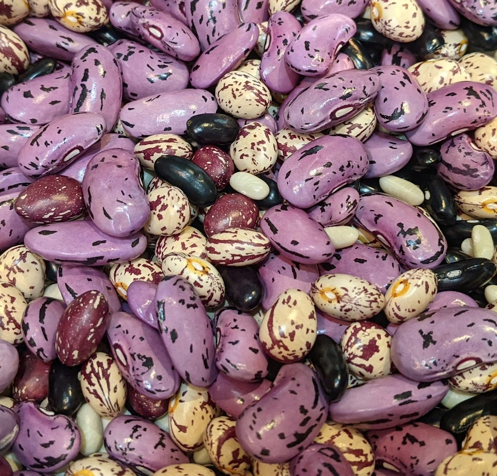

Notes
A place for useful notes to avoid having to look them up all the time 📝

Cooking dried ingredients
Beans:
Soak for 8+ hours
Salt the water and then boil for
~45min
(depending on bean size)
1 tin = 125g dried beans
Chickpeas:
Soak for 8+ hours
Salt the water and then boil for
~60min
1 tin = 125g dried chickpeas
Lentils:
No need to soak
Salt the water and then boil for
~25min
1 tin = 125g dried lentils
Rice ratios
1 cup dry Italian brown rice = just less than 4 cups cooked rice
1.5 cups dry Italian brown rice = 5.25 cups cooked rice